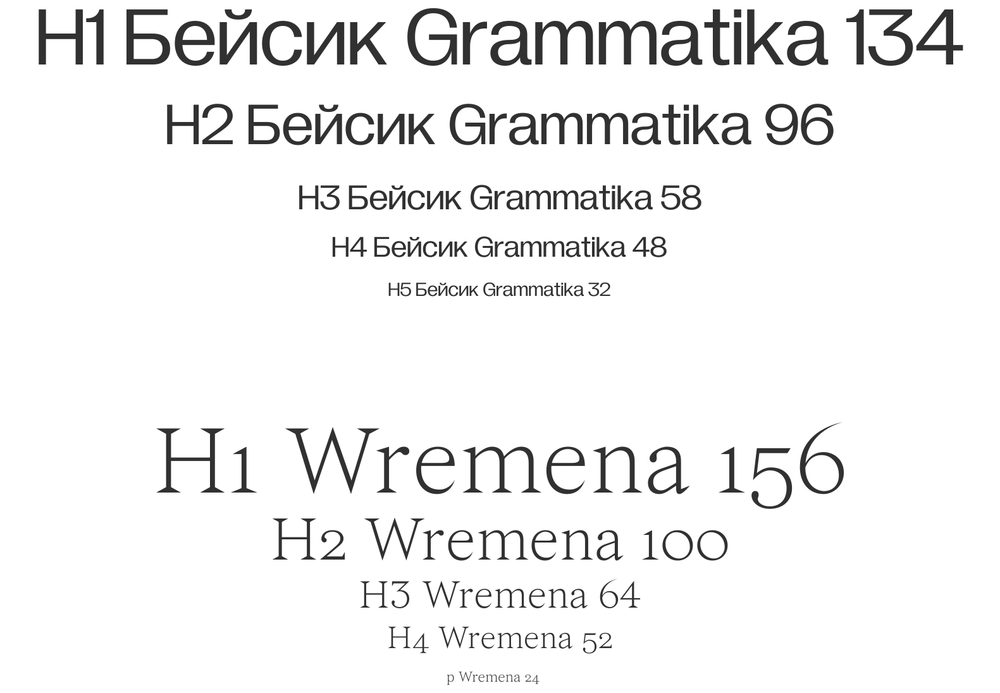

расклад — это твоя
лучшая подружка
в мире таро
медиа о таро для зумерок, сочетающее в себе онлайн-гадания в различных форматах, актуальные статьи
о культуре таро
и справочник с трактовками карт
миссия
типографика

бейсик текст набирается грамматикой,
но когда мы говорим
о магии
используем времена
тикток обводка
графика

карты, звезды, градиенты, фотостиль
tone of voice
нужно звучать как подружка
ключевые слова:
рофл кринж пов сюр сессия моргенштерн зайка милая моя хорошая нежная геншин мемы абьюз токсичность дейтинг тв